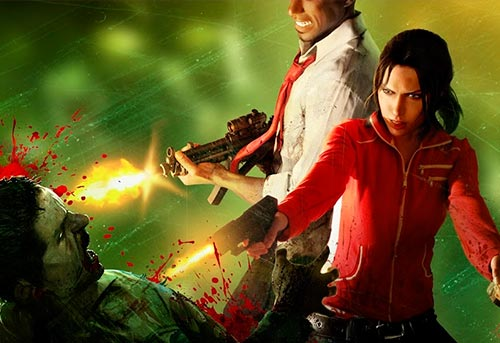
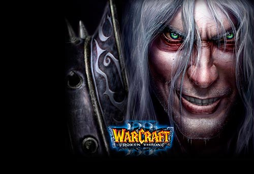
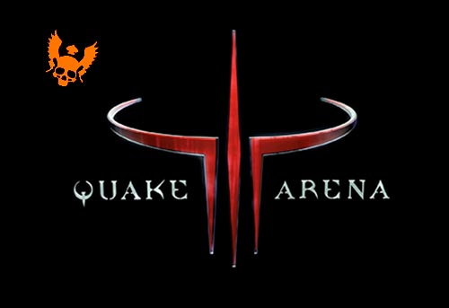
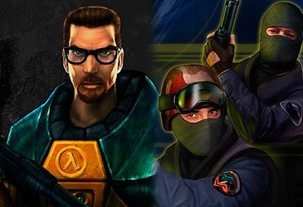

Left 4 Dead
Left 4 Dead (abreviado como L4D) es un videojuego de disparos en primera persona de tipo survival horror. Fue desarrollado por Turtle Rock Studios, compañía comprada por Valve Software durante su desarrollo. El juego usa el motor gráfico Valve Source y está disponible para Microsoft Windows, Mac OS X y para la videoconsola Xbox 360. Situada después de una pandemia apocalíptica, la trama del videojuego enfrenta a los cuatro protagonistas —llamados los «superviventes»— contra hordas de infectados
Descarga del juego completo
Version 1.0.1.4 Completo + Crack: Descargar desde MEGA
Descarga actualizacion (a 1.0.1.4) desde cualquier version anterior
Master Update 1.0.1.4: Descargar desde MEDIAFIRE
Standalone (Crack): Descargar desde MEDIAFIRE

Warcraft 3 Frozen Throne
Warcraft III es un videojuego de estrategia en tiempo real creado por Blizzard Entertainment y es la tercera parte de la serie Warcraft. Además de continuar la historia del mundo épico medieval de Warcraft se distingue de sus predecesores por incorporar dos importantes cambios: el paso a los gráficos 3D y la aparición de dos nuevas razas. Warcraft III es uno de los juegos de estrategia más laureados por la comunidad de videojugadores. El juego consiste básicamente en administrar los recursos disponibles (Oro, Madera y sustento) para producir unidades militares y desarrollar un ejército que dirigir en contra de los oponentes hasta destruir todos sus edificios.
Descargar del juego completo
Version 1.26.0.6401 Descargar desde MEGA

Quake III Arena
Quake 3 Arena o Quake 3 es un videojuego de disparos en primera persona. El juego fue desarrollado por id Software. Quake III Arena es el tercer título en la serie y difiere de juegos anteriores de la serie Quake en excluir los elementos comunes de los denominados juegos para un sólo jugador, enfocándose en su lugar en la acción multijugador. La experiencia solitaria en Quake III Arena es un combate de arena contra oponentes controlados por PC, en un estilo similar a su competidor, Unreal Tournament. Al igual que en muchos juegos del género en su modo multijugador, el objetivo en Quake III Arena es moverse a través de todo el campo de batalla eliminando (fragueando, del inglés frag) a los jugadores enemigos y anotándose puntos basándose en los objetivos del tipo de juego
Descargar del juego Completo: Descargar desde MEDIAFIRE

Half-Life :: P47Pack
Half-Life es un videojuego de disparos en primera persona de ciencia ficción desarrollado por Valve Corporation, siendo este el juego debut de la compañía y el primero de lo que posteriormente pasaría a ser la serie Half-Life. La trama de Half-Life tiene lugar en Black Mesa Research Facility, Nuevo México, en un orden cronológico indeterminado, tratando las particulares circunstancias de los diversos científicos e integrantes de la unidad de seguridad de las instalaciones y la Unidad de Combate en Entornos Peligrosos conocida como H.E.C.U. (Hazardous Environment Combat Unit en inglés), la cual ha sido constituida para ingresar en las instalaciones y eliminar a todo individuo capaz de testificar sobre cualquier incidente ocurrido
Descargar del juego completo, incluye:
-Half-Life, DeathMatch Classic, Ricochet, Team fortress
-Counter Strike 1.6, Natural Selection, Opposing Force, Jumbot
Descarga (Version 47) Descargar desde MEGA
{kind=link}
{kind=link}
{kind=link}
{kind=link}